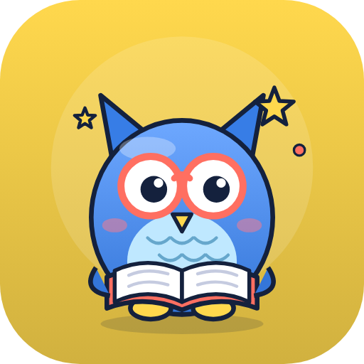
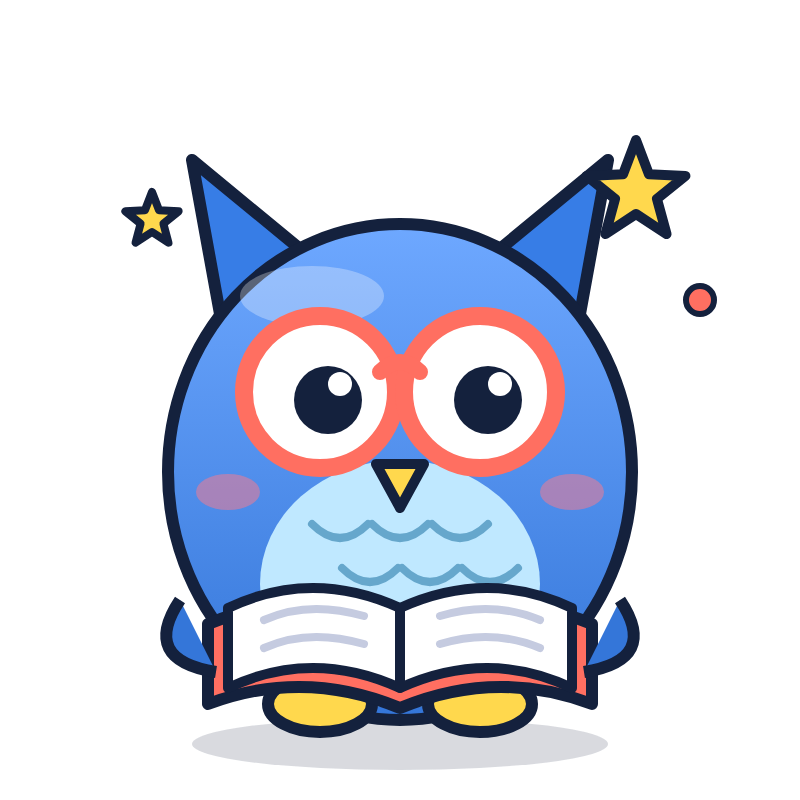

Il était un jeu
Clin d'œil à « Il était une fois » : on raconte, et l'histoire se joue. Plume lit le récit dans son livre, d'où sort le jeu. Univers conte, ciel clair, élégant.
Texte courant en Nunito — on décrit le jeu, l'agent le fabrique, on joue, on donne son avis.
Aperçu du haut de la landing page avec cette identité.
Commencer